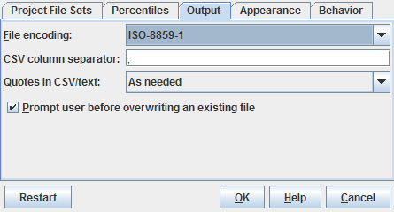

| Prev - Next - Down | SDMetrics - the UML design measurement tool |

Figure 28: Output Settings
File encoding
Specifies the character encoding of all non-binary output file formats (TXT, CSV, HTML, ODS, XML, SXC and SVG). The dropdown list shows all available character encodings for your platform. Default is ISO-8859-1 (also known as Latin-1). Choose an alternative encoding if your UML model element names contain characters not available in ISO-8859-1.
CSV column separator
By default, the CSV (comma separated vector) format uses the comma to delimit the values in a row of data. If you require a different delimiter, you can enter it here.
Quotes in CSV/text
The TXT and CSV output formats use certain characters as column and line delimiter. This leads to a conflict if a value to be written itself contains one of these delimiters: writing the value "as is" destroys the overall table structure of the output file.
A standard solution to resolve this conflict is to put quotes (") around the values - characters between quotes will not be interpreted as column or line delimiters. If the value to be put in quotes itself contains a quote character, that quote character is doubled in the output file (the value 5"10 thus becomes "5""10").
SDMetrics offers three strategies to deal with conflicting values in CSV and TXT output formats:
With this option enabled, SDMetrics will ask for your permission before overwriting existing files when you export data tables or graphs. This setting only affects the GUI, not the command line operation (which will always overwrite without asking).
| Prev | Up | Next |
| Section 4.16.2 "Percentiles" | Contents | Section 4.16.4 "Appearance" |